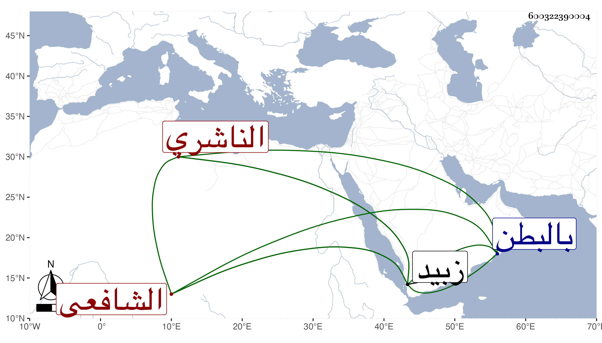

0902Sakhawi.DawLamic.ITO20230111-ara1.EIS1600.600322390004
Biography ID: 600322390004
256
عمر بن أبي بكر بن علي بن محمد بن أبي بكر بن عبد الله بن عمر بن عبد الرحمن بن عبد الله أبو حفص الناشري الشافعي والد مصنف الناشريين العفيف عثمان . ولد في ربيع الأول سنة اثنتين وخمسين وسبعمائة وكان فاضلا خيرا صابرا حسن السيرة صالح السريرة كثير التلاوة والحرص على الجماعة والذكر للموت . جلس في ابتدائه لتعليم الأبناء كتاب الله فانتفع به جماعة ، وولي إمامة مسجد الزيات بزبيد وعقد الأنكحة بها وهو ممن حضر مجلس والده وسمع على أخيه الشهاب أحمد بل سمع على الوجيه عبد الرحمن بن أبي الخير ومات شهيدا بالبطن في جمادى الأولى سنة ثمان ودفن بمقابر أهله من زبيد ورأى له أخوه الإمام علي مناما حسنا طوله ابنه
